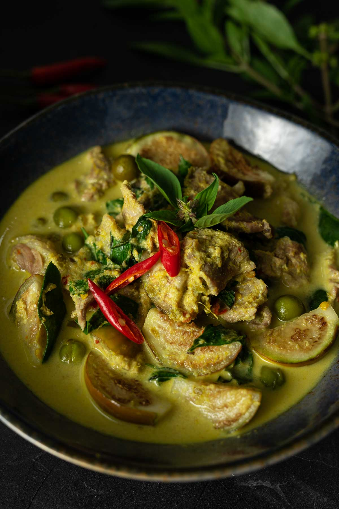

Green Curry Recipe

Description
Green Curry originated in Thailand, with "green" describing the appearance of the dish which comes from green chillies.
It is typically served with rice and a meat of choice (beef, pork, chicken and fish).
The broth is based on coconut milk and fish green chillies, giving it a "sweet green" colour as they refer to it in Thai.
Ingredients
- Coconut Milk
- Meat of choice (choose between beef, pork, chicken and fish)
- Fresh green chillies
- Thai holy basil
- Ayam green curry paste
- Snow peas
- Eggplant
- Chicken/Vegetable stock
- Kaffir lime leaves (optional)
Steps
- Fry off curry paste
- Add stock
- Add coconut milk and kaffir lime leaves
- Add meat
- Bring to a boil and leave for 10 minutes
- Add snow peas and eggplant
- Serve with holy basil